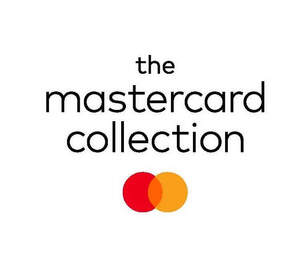

Trade Mark Journal No.2025/020 16 May 2025
UK00004190928 17 April 2025 (36,39,41)

The colours red, orange, yellow and black are claimed as a feature of the mark.
- Class 36
- Financial services; financial services, namely, transaction and payment processing services, payment verification services, payment card authorization, payment clearance and settlement services between financial institutions, switching services for credit cards, debit cards, charge cards and prepaid cards offered through cards with stored value; financial services, namely, credit card, debit card, charge card and prepaid card transaction authorization and settlement services; credit, debit, charge and prepaid card transaction processing services; cash disbursement via automated teller machines; ATM banking services; ATM banking services, namely, processing services for financial transactions by card holders via automatic teller machines; financial services, namely, the provision of contactless mobile payments processing through merchants at retail, online and wholesale locations; consulting services regarding payment solutions, banking, credit card, debit card and payment card; information, advisory and consultancy services relating to all the aforesaid services.
- Class 39
- Travel arrangement services; transport services; travel and tour ticket reservation services and making reservations and bookings for transportation; information, advisory and consultancy services relating to all the aforesaid services.
- Class 41
- Entertainment services; sporting and cultural activities; party planning services; planning, arrangement and hosting of entertainment, sporting and cultural events; ticket reservation services for entertainment, sporting and cultural events; information, advisory and consultancy services relating to all the aforesaid services.
Mastercard International Incorporated
Representative: Kilburn & Strode LLP